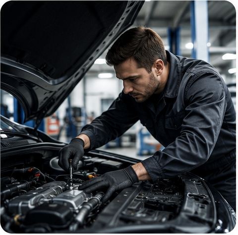
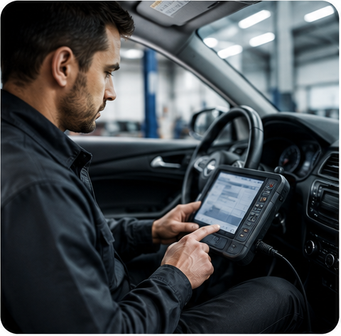

Клиентская зона AutoMD
Комфортное пространство для клиентов, которые хотят дождаться диагностики, согласования работ или завершения обслуживания автомобиля в техцентре.
Пока мастера проверяют, ремонтируют или обслуживают автомобиль, вы можете остаться в клиентской зоне, отдохнуть, поработать или обсудить детали ремонта с менеджером.
- Можно дождаться диагностики
- Комфортное место ожидания
- Консультация менеджера на месте
- Удобно для частных клиентов и юридических лиц
- Рядом с техцентром и зоной приемки
- Записаться в техцентр
Что есть в клиентской зоне
В клиентской зоне можно провести время, пока автомобиль находится на диагностике, ТО или обслуживании.

Зона для работы с ноутбуком

Напитки

Wi-Fi

Информация по статусу автомобиля
Консультация менеджера
Возможность согласовать работы на месте
Доступ к информации по услугам и запчастям
Список удобств можно скорректировать после подтверждения фактического наполнения клиентской зоны в техцентрах.
Выберите удобный техцентр AutoMD
Южный
- Адрес
- метро Пражская, г. Москва, Красного маяка, 16
- Телефон
- +7 (495) 477-50-29
- Время работы
- Пн-Вс, 08:00-20:00
Северный
- Адрес
- метро Ховрино, г. Москва, Ижорская улица, 8с1
- Телефон
- +7 (495) 477-50-29
- Время работы
- Пн-Вс, 08:00-20:00
Почему выбирают AutoMD
Запчасти на складе
Для популярных моделей многие детали есть в наличии — не нужно ждать поставку неделями
Ремонт за 1 день
Большинство типовых работ выполняем в день обращения после диагностики и согласования
Гарантия на работы и запчасти
После ремонта объясняем, что было сделано, и фиксируем условия обслуживания.
Профильная экспертиза
Основной фокус — Fiat Ducato, Ford Transit, Citroen Jumper, Iveco Daily, Peugeot Boxer, Peugeot Partner, Citroen Berlingo, Sollers Atlant и JAC Sunray
Сервис и запчасти в одном месте
Подбираем детали, согласовываем стоимость, выполняем ремонт и выдаем автомобиль с гарантией
Работа с физлицами и бизнесом
Обслуживаем личные автомобили, коммерческий транспорт и автопарки компаний


Часто задаваемые вопросы
Можно ли находиться в клиентской зоне всё время ремонта?
Да, если работы выполняются в часы работы техцентра. Менеджер сообщит ориентировочное время ожидания.
Можно ли работать с ноутбуком?
В клиентской зоне предусмотрены места для ожидания и работы, а также доступ к Wi-Fi.
Как узнать статус автомобиля?
Менеджер сообщит результаты диагностики, согласует работы и будет держать вас в курсе обслуживания.
Нужно ли заранее записываться?
Предварительная запись помогает сократить ожидание и заранее проверить наличие нужных запчастей.
Можно ли приехать с коллегой?
Да, клиентская зона доступна посетителям, ожидающим диагностику или обслуживание автомобиля.
Работаете ли вы с юридическими лицами?
Да, обслуживаем отдельные автомобили и автопарки, предоставляем безналичную оплату и документы.
Можно ли согласовать ремонт на месте?
Да, менеджер объяснит результаты диагностики, варианты ремонта, сроки и стоимость работ.
В каких техцентрах есть клиентская зона?
Уточните актуальное оснащение Южного и Северного техцентров у менеджера при записи.

Запишем в удобный техцентр
Оставьте контакты — менеджер уточнит автомобиль и задачу, подберёт время и расскажет об актуальном оснащении клиентской зоны.
Клиентская зона AutoMD
Клиентская зона AutoMD — это комфортное пространство рядом с техцентром и зоной приёмки. Здесь можно дождаться диагностики, согласования работ или завершения обслуживания автомобиля.
Пока специалисты занимаются автомобилем, клиент может отдохнуть, поработать с ноутбуком и получить актуальную информацию о ходе ремонта. Менеджер объяснит результаты диагностики, доступные варианты работ и сроки обслуживания.
Перед визитом уточните актуальное оснащение клиентской зоны и запишитесь в удобный техцентр: Южный у метро Пражская или Северный у метро Ховрино.